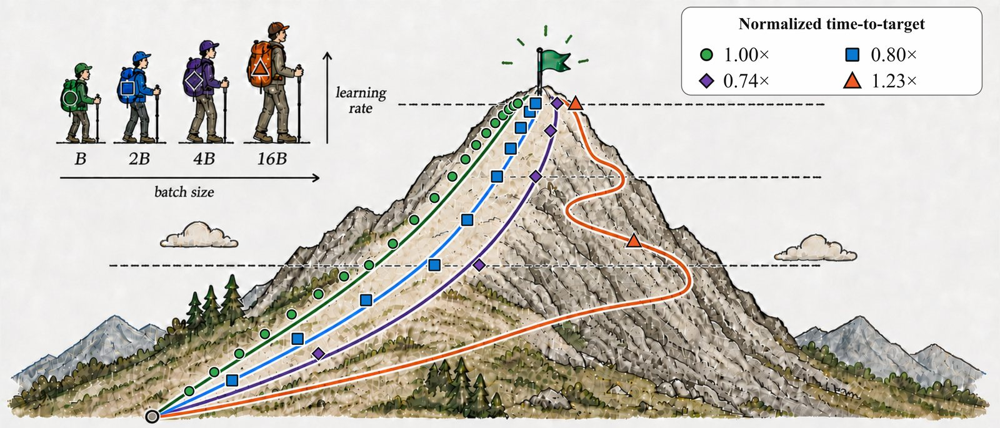

Tech Report
When Do Larger Batches Help Scale LLM Reinforcement Learning?
Tencent Hy · arXiv:2608.29296, 2026
A larger batch shortens wall-clock time-to-target only when its throughput gain exceeds its samples-to-target penalty. In GRPO, pairing larger batches with learning-rate retuning reduces time-to-target by up to 29%.